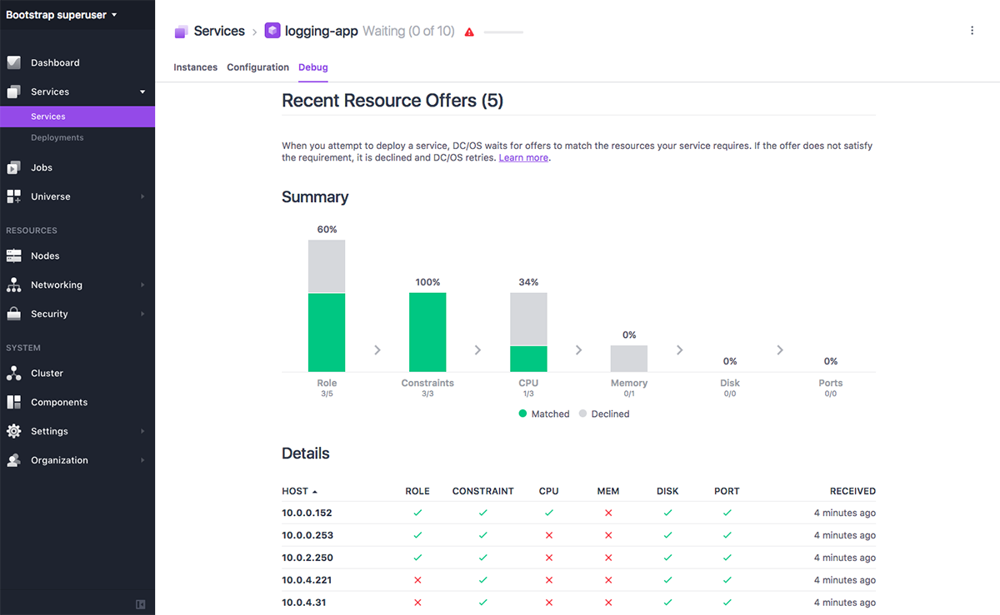
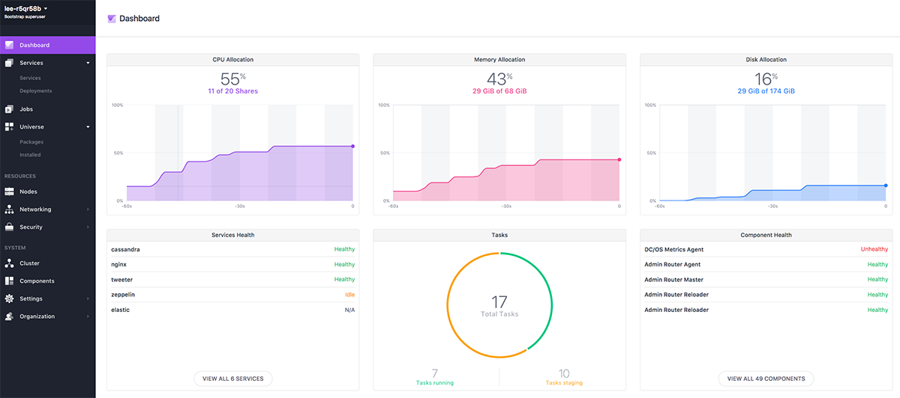
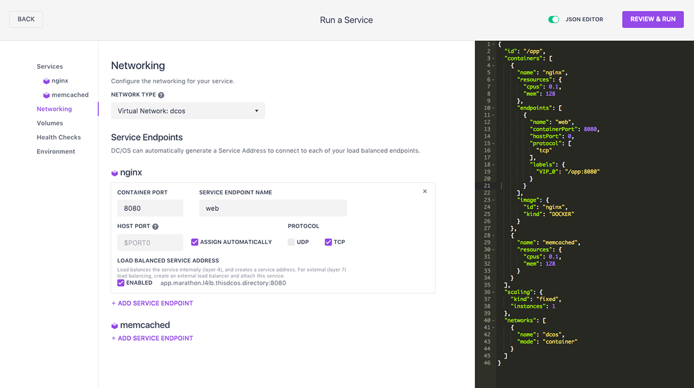

DC/OS 1.9 includes many new capabilities for Operators, and expands the collection of Data and Developer Services with a focus on:
The new dcos task exec command allows you to remotely execute a process inside the container of a deployed Mesos task, providing the following features.
--interactive flag for interactive sessions.--tty flag.--interactive and --tty flags to launch an interactive bash session or to run top and see the resource usage of your container in real time.For more information, see the documentation for the debugging documentation.
Stream task and system logs to journald by setting the mesos_container_log_sink install-time parameter to journald or journald+logrotate. This allows you to:
dcos node log and dcos task log DC/OS CLI commands to query the logs. You can also make requests directly against the new Logging API.For more information, see the documentation.
/container/<container_id>/app endpoint.For more information, see the documentation.
The new service deployment troubleshooting tool allows you to find out why your applications aren’t starting from the GUI and CLI.

New look and feel and improved navigation.

Usability improvements to the service create workflow.

dcos_generate_config.sh --aws-cloudformation command will now determine the region of the s3 bucket automatically, preventing region mistakes.dcos_add_user.py script, which you can use to add or invites users to a DC/OS cluster from the command line. For more information, see the documentation. dcos-shell which activates the DC/OS environment for running other DC/OS command line tools.Improved upgrade tooling and experience for on-premise installations. Upgrades now use internal DC/OS APIs to ensure nodes can be upgraded with minimal disruption to running DC/OS services on a node. The upgrade procedure has also been simplified to improve user experience.
For more information, see the documentation.